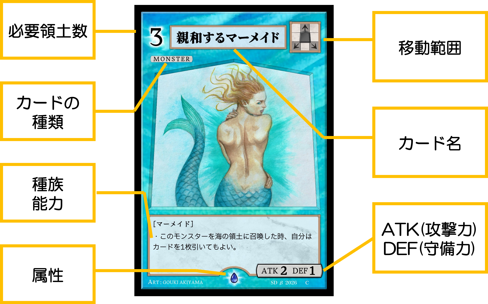
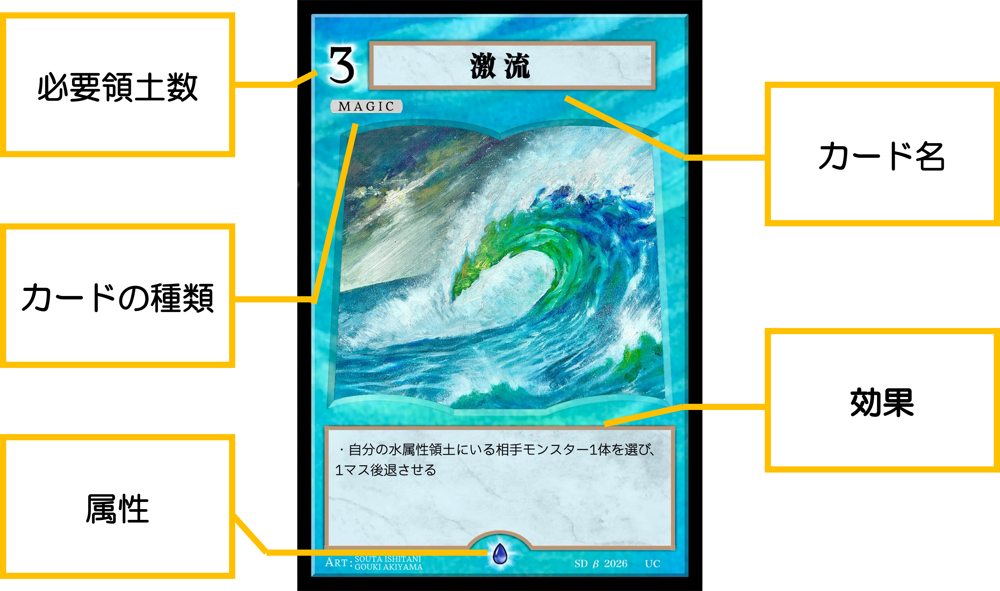
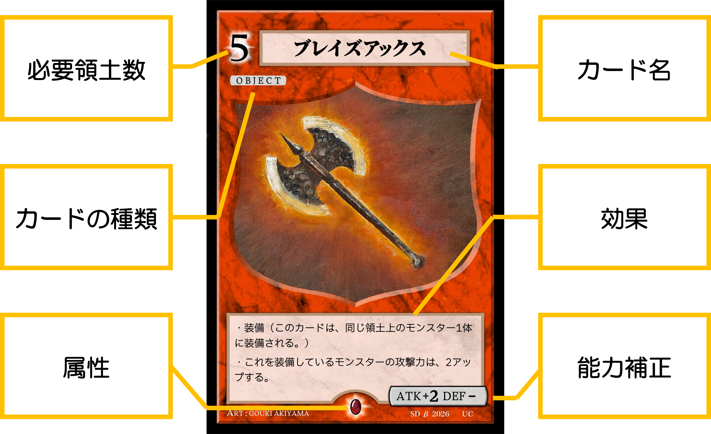
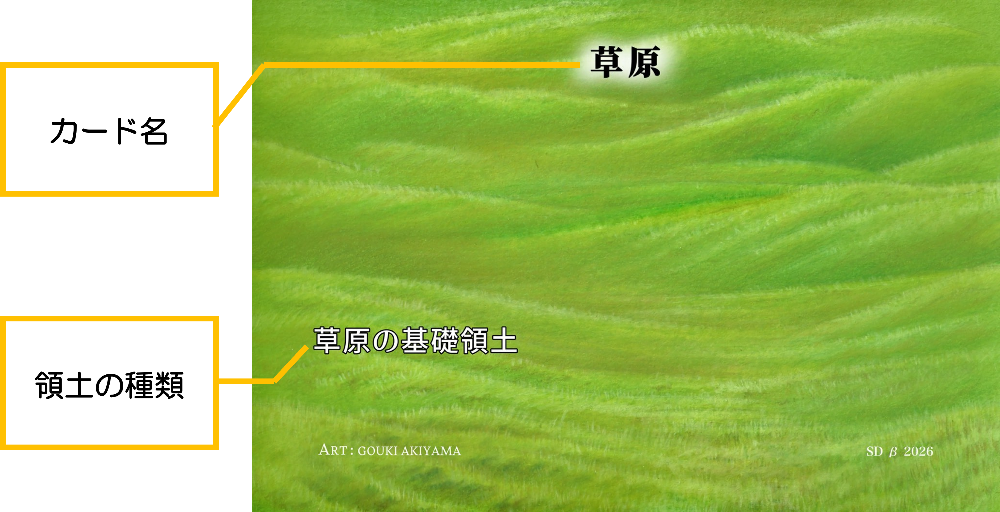
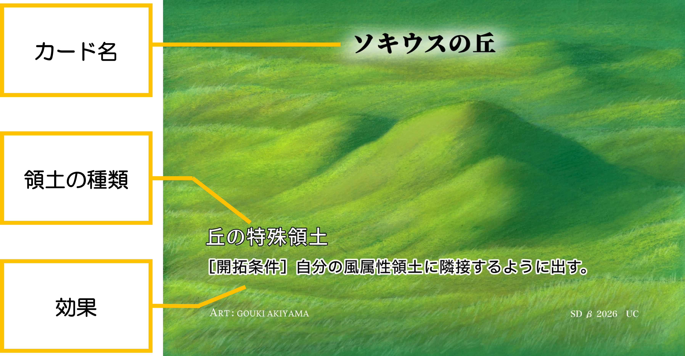
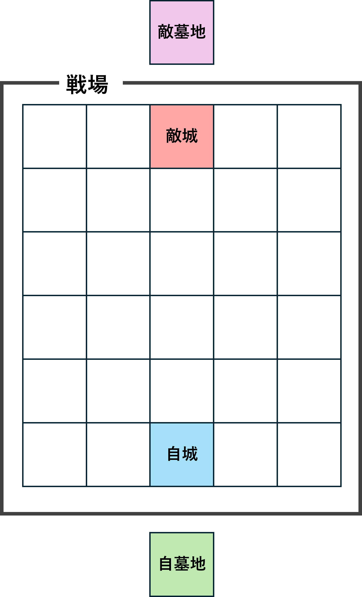

01
基本情報
カードの種類
- 領土
- モンスター
- マジック
- 装備
モンスター

マジック

装備

基礎領土

特殊領土

城
プレイヤーが使用する40枚のカードの束。 一般的なカードゲームにおけるデッキにあたる。
必要領土数
カードに記載されている数字。 カードをプレイするために必要な、 自分の領土の枚数を表す。
必要領土数を満たしても、 領土が消費されたり、 場を離れたりすることはない。
墓地
使用済みのカードや、 場を離れたカードなどを置く場所。
各プレイヤーごとに1つずつ用意する。
隣接
対象となるマスの 上下左右4方向を指す。
斜めのマスは隣接として扱わない。
戦場
城、領土、モンスター、装備などを配置し、 ゲームを進めるための場所。
カードに書かれた効果と基本ルールが異なる場合は、 カードに書かれた内容を優先する。
02
城の構築
城は40枚で構成する。
同名カード
同じ名前のカードは、 原則として1つの城に3枚まで入れられる。
基礎領土
基礎領土は、 同じ名前のカードを何枚でも入れられる。
ただし、 1つの城に入れられる基礎領土は 1種類のみ。
特殊領土
同じ名前の特殊領土は、 1つの城に3枚まで入れられる。
特殊領土の種類数に制限はない。
03
ゲームの準備
- 各プレイヤーは40枚の城を用意する。
- 図のように城を配置する。
- お互いに城の上から7枚引いて手札にする。
- 必要であれば、手札から好きな枚数を選び、 相手に見せず好きな順番で城の一番下へ送る。 その後、送った枚数と同じ枚数を城の上から引く。
- じゃんけんを行い、 勝ったプレイヤーが先攻となる。
初期手札の引き直し（マリガン）は、 1回のみ行える。
戦場
戦場は縦6マス × 横5マスで構成される。
ゲーム開始時、 戦場には城以外のカードを置かない。

04
勝利条件
以下のいずれかを満たすことで勝利となる。
- 自分のモンスターが相手の城へ到達する。
- 相手の城が0枚になる。
城が0枚になったプレイヤーは、 その時点で敗北する。
05
ターンの進め方
1ターンは、 以下の6つのフェイズによって進行する。
スタートフェイズ
ドローフェイズ
開拓フェイズ
メインフェイズ
移動フェイズ
エンドフェイズ
1. スタートフェイズ
自分のターンの開始を示すフェイズ。
2. ドローフェイズ
城の上からカードを1枚引く。
ただし、 先攻プレイヤーの最初のターンのみ カードを引かない。
3. 開拓フェイズ
手札から領土カードを 最大1枚まで戦場に出すことができる。
領土は、 自分の城または 自分の領土に隣接している空いているマスへ配置する。
すでに城や領土が存在するマスには、 新しい領土を配置できない。
4. メインフェイズ
メインフェイズでは、 モンスターの召喚、 装備のプレイ、 マジックの使用を行うことができる。
モンスターの召喚と装備のプレイは、 合わせて1ターンに1回まで。 マジックは条件を満たしていれば、 1ターンに何枚でも使用できる。
モンスターの召喚
自分の領土の枚数が、 モンスターに書かれている必要領土数以上であれば召喚できる。
- 対応する属性を持つ自分の領土上にのみ召喚できる。
- モンスターが存在するマスや城の上には召喚できない。
装備
装備は、 対応する属性を持つ自分の領土上にプレイする。
- モンスターがいない領土にも配置できる。
- 自分の領土上であれば、 自分・相手どちらのモンスターにも装備できる。
- 1体のモンスターが装備できる装備カードは1枚まで。
- 装備しているモンスターが場を離れた場合、 装備はそのマスに残る。
- 1つの領土上には複数の装備を置くことができる。
マジック
必要領土数を満たし、 対応する属性を持つ自分の領土が1枚以上あれば使用できる。
- 条件を満たしていれば1ターンに何枚でも使用できる。
- 使用したマジックは墓地へ送る。
- 対象や効果範囲はカードに書かれた内容に従う。
5. 移動フェイズ
- 自分のモンスターを このフェイズ中に一回だけ移動させることができる。
- 移動を行わなくてもよい。
- モンスターは、 自分または相手の領土が存在するマスを 移動できる。
- 自分のモンスターがいるマスを通過することはできない。
- 召喚したターンのモンスターは通常移動できない。
- 装備中のモンスターが移動すると、 装備もそのモンスターとともに移動する。
- 装備が存在するマスへモンスターが移動した場合、 そのモンスターはそこにある装備を1枚装備する。
- 相手モンスターのいるマスへ到達した場合、 戦闘が発生する。
6. エンドフェイズ
自分のターンを終了し、 相手のターンへ移る。
06
戦闘
移動しているモンスターが 相手モンスターの存在するマスへ入った場合、 戦闘が発生する。
移動しているモンスターの 攻撃力と、 そのマスにいたモンスターの 守備力を比較する。
攻撃力 ＞ 守備力
守備側のモンスターを墓地へ送る。
攻撃力 ＜ 守備力
攻撃側のモンスターを墓地へ送る。
攻撃力 ＝ 守備力
両方のモンスターを墓地へ送る。
装備やカード効果による数値の変更がある場合は、 それらを反映した最終的な数値で比較する。
戦闘によってモンスターが場を離れた場合、 そのモンスターが装備していた装備は そのマスに残る。
07
城
城は戦場に最初から存在する、 各プレイヤーの拠点。
城は領土として数えない。
自分の城には、自分のモンスターを召喚できない。
自分のモンスターは自分の城へ通常移動できない。
自分のモンスターが 相手の城へ到達した時点で勝利となる。
08
公開情報
戦場に出ているカードと 墓地のカードは公開情報として扱う。
手札と城の中身は 非公開情報として扱う。